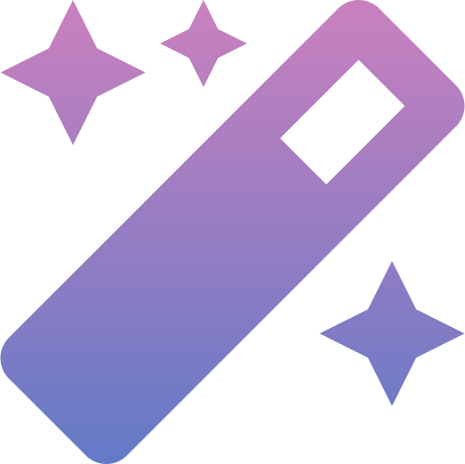
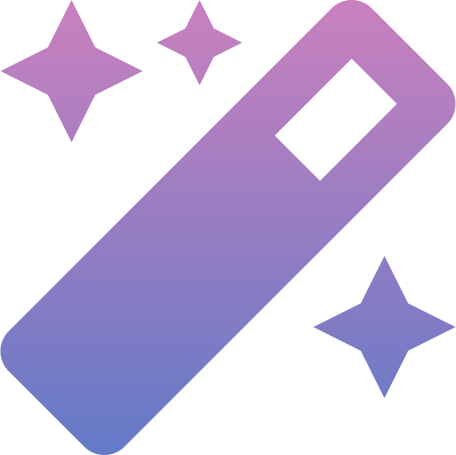

Hello, World「こんにちは世界」
Hello, World「こんにちは世界」
Hi, everyone. Let me introduce myself. I'm MochibagelBaby. I'm a self-taught developer and I love coding so much. I can code every day :D.
Though there is one thing I love more than coding! It is my most beloved boyfriend. He is my everything and my entire world. His love is the reason I smile every day, the genuine happiness I feel, the energy for me to get up every morning, and the inspiration for me to do great things and be the best version of myself.
Whoops~ sorry, I digressed. I just want everyone to know how much I love him. Now, let's get back to the topic of coding. ;D
I'm a Full-stack Developer specializing in web technologies. Most of my work is to develop web applications for businesses. I mostly use HTML, CSS, JavaScript, EJS, Node.js, and MySQL on my daily development.
My experience in coding started back since 2015 when I was first introduced to the world of technology by a professional Swedish developer who were my boss and business partner at the time. I got accepted into the company with my design skills and the ability come up with creative ideas. I happened to be able to use Adobe Photoshop and Adobe XD pretty well through years of self-learning and I could make websites and applications look pretty and desirable. And that was what my boss always emphasized to me and our customers, especially when we were getting in business. Because no matter how great your programs could do things or how awesome the technology behind it is, user interface (UI) was normally what stirs up the buy-in and makes the project sold. The customers were normally intrigued when they saw beautiful design of user interface, how seamless everything run on the web page, and intuitive workflow which also involves user experience design (UX). UX/UI Design captured attention, captivated the buy-ins from executives and attracted investments.
Most of the time when we got customers' attention by modern and attractive design and when they see what they like they are willing to talk about the technologies behind it and finally get down to signing a contract. However, our challenges didnt end there. We normally have to devote ourselves into the project in a very strict timeline and tried to solve all the problem that came up along the way, with most of them being the compatibility between the customers' enterprise software and other technologies. We had set milestones for how long each functionality is gonna take to develop and when it was supposed to be finished so we can estimate a project time, completion, and delivery date. After we are finished with development we would have a final meeting with customers to present what we had done and let tech lead from customers' company go through each specification and check if we have completed everything previously agreed upon. After everything is approved we will get our check. Cha ching! We celebrate and continue on with other projects. Sound like a lot of fun, right? :D
I love coding <3
Table of Content「目次」